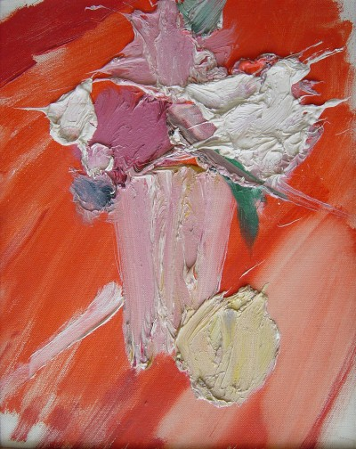

Manoucher Yektai
1922–2019
Artist Biography
Manoucher Yektai or Yechtai, a painter and poet, was born in Iran but moved in his early twenties to Paris where he studied 1947-49 under Amedee Ozenfant. He relocated to New York in 1959 where he remained ever since, although he retained a studio in Paris. An intense and private man, Yektai was linked with the American Abstract Expressionist movement but refused to be categorised and very much ploughed his own furrow. A good friend of Jackson Pollock, Yektai was one of the finest Iranian painters of the 20th century. He had solo shows at the Poindexter, Borgenicht and Rosenberg galleries in New York and exhibited across the United States as well as in Paris, London and elsewhere. His works are in many public as well as private collections, including Gibbes Museum of Art, Charleston and Museum of Modern Art, New York.

Still life, 1962